Global Neuronal Workspace Theory
Chapter 8
fMRI & EEG
Functional MRI
Noninvasive & precise location
Hemodynamic Response blood vessel response to metabolic demands of brain activity
Glial cells
- sense surge in synaptic activity
- chemically signal local arteries to dilate
- To compensate for increased energy consumption
- blood flow increases few seconds later
- bringing in more oxygen and glucose
Human brain activity at millimeter resolution
Half-second resolution (at best)
Cannot track time course of neuronal firing for consciousness (< 0.5 sec)
Electroencephalography (EEG)
- Noninvasive & precise time
- Electrical currents at synapses
- Recording of brain waves invented in the 1930s,
- High-powered technique, with up to 256 electrodes
- Brain activity with millisecond resolution over the whole head
fMRI, EEG, & cognitive psychology
- sequence of brain activation (EEG)
- from retina to frontal cortex (fMRI)
- combined with cognitive psychology offers window into conscious mind
The presence of these patterns of neural activity, like a signature on a document, would reliably index conscious perception.
Signatures of Consciousness
Signatures of Consciousness
| Question | Signature | Method | Key Features | |
|---|---|---|---|---|
| 1st | Where | Neural Avalanche: “higher” cortex | fMRI | Cascade of activity |
| 2nd | When | P3 After 300 ms | ERP | Global cortical Inhibition Wave |
| 3rd | What | Late amplification of gamma oscillations | EEG | Enhancement of balanced excitatory/inhibitory windows |
| 4th | Why | Brain web of interacting assemblies | ECoG | Integration & connection at distance |
1st: fMRI (high space-resolution to establish WHERE)
Unconscious/Preconscious: Sensory input according to processing that is highly localized to input modality: vision (occipital lobe), hearing (superior temporal lobe), somatosensory (anterior parietal lobe), etc
Conscious processing: “all-or-nothing”, ignition, global broadcast, and re-entrant-amplified processing
- Cortex regions 1) Frontal, 2) inferotemporal, 3) midline/limbic, 4) (para)hippocampal , 5) Posterior Parietal
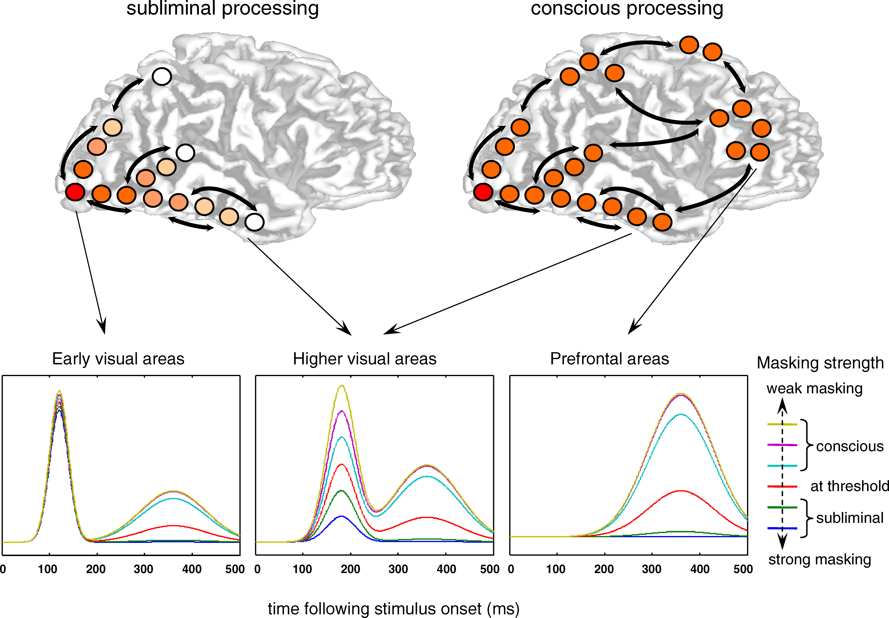
Signatures of Consciousness
| Question | Signature | Method | Key Features | |
|---|---|---|---|---|
| 1st | Where | Neural Avalanche: “higher” cortex | fMRI | Cascade of activity |
| 2nd | When | P3 After 300 ms | ERP | Global cortical Inhibition Wave |
| 3rd | What | Late amplification of gamma oscillations | EEG | Enhancement of balanced excitatory/inhibitory windows |
| 4th | Why | Brain web of interacting assemblies | ECoG | Integration & connection at distance |
2nd: EEG (high time-resolution to establish WHEN)
- Unconscious/Preconscious P1/N1 waves before 200ms post-stimulus, highly-localized by input modality
- Conscious processing: post-stimulus onset 200-250 ms: P300 brain wave Appears frontally initially for novel stimuli (P3a), but globally for all conscious stimuli (P3b)
Signatures of Consciousness
| Question | Signature | Method | Key Features | |
|---|---|---|---|---|
| 1st | Where | Neural Avalanche: “higher” cortex | fMRI | Cascade of activity |
| 2nd | When | P3 After 300 ms | ERP | Global cortical Inhibition Wave |
| 3rd | What | Late amplification of gamma oscillations | EEG | Enhancement of balanced excitatory/inhibitory windows |
| 4th | Why | Brain web of interacting assemblies | ECoG | Integration & connection at distance |
3rd: (ECoG/invasive electrophysiology)
- Gamma band + Theta : local coordinated activity multiplexed with lower amplitude band
Signatures of Consciousness
| Question | Signature | Method | Key Features | |
|---|---|---|---|---|
| 1st | Where | Neural Avalanche: “higher” cortex | fMRI | Cascade of activity |
| 2nd | When | P3 After 300 ms | ERP | Global cortical Inhibition Wave |
| 3rd | What | Late amplification of gamma oscillations | EEG | Enhancement of balanced excitatory/inhibitory windows |
| 4th | Why | Brain web of interacting assemblies | ECoG | Integration & connection at distance |
4th: (ECoG/invasive electrophysiology)
- Unconscious/Preconscious: early on restricted to thamocortical locations and short distance connections in same modality
- Conscious: “Brain Web” later +300 ms indicating amplified & synchronized information across large areas of brain (dependent on coherent activity connected by cortico-cortical connections through white-matter tracts)
The Avalanche of Consciousness (fMRI)
Grill-Spector (fMRI)
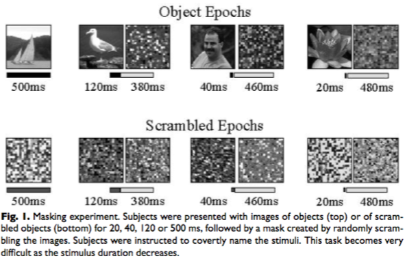
- pictures of objects flashed
- (duration 20 to 125 ms)
- mask followed each picture
Grill-Spector (fMRI)
- Early visual cortex:
- activity irrespective of masking/consciousness
- Retinotopic areas:
- upper field (blue)
- lower field (green)
- center field (yellow)
- Dorsal Pathway: field selective (turquoise)
- Object Selective Lateral Orbial & Fusiform Gyrus:
- Object-selective (orange)
- Face-selective (pink)
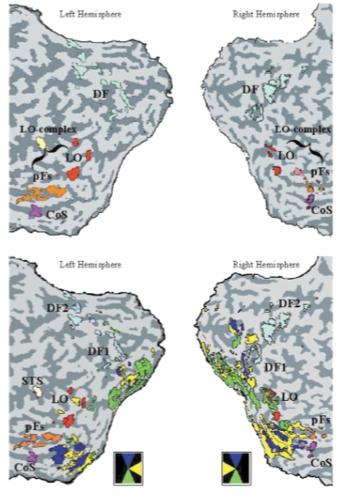
Visual fMRI: Grill-Spector
- Higher visual areas:
- conscious report & activation (Cor.)
- fusiform gyrus & lateral occipitotemporal
- regions for sorting out categories
- invariant representation of appearance
- faces/objects/words/places
- image was likely to become conscious in this area
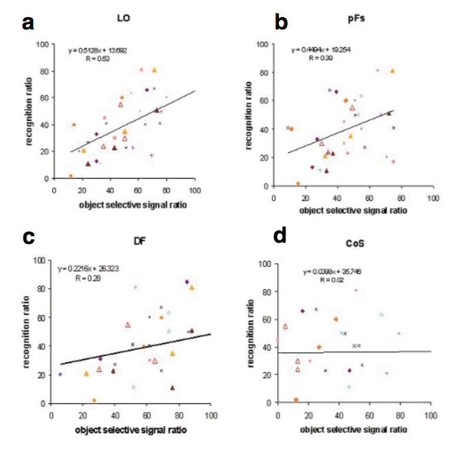
Visual fMRI: Sergent & Dehaene
- word was masked & remained unconscious: additional regions absent
- parietal lobes
- frontal lobes
- anterior cingulate gyrus
- word conscious: set of additional regions
- V1 & fusiform gyrus - visual word form area 1200% or 12x
- activation above threshold correlates with awareness
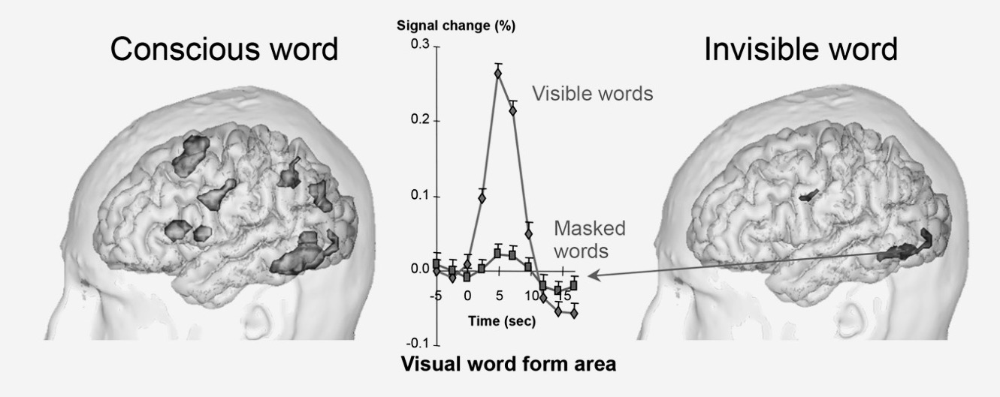
Auditory fMRI: Sadaghiani et al (2009)
the sound level set at threshold detect only half of them
conscious trials
- avalanche of brain activity
- amplifies this early sensory activation
- breaks into the inferior parietal and prefrontal areas
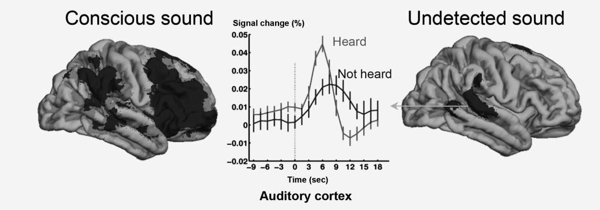
Consciousness Avalanche
- 1st cortical stage,
- progresses rostrally
- masking weakens
- 2nd cortical stage
- Amplification factor
- varies across successive regions of visual pathway
- Avalanche metaphor: conscious activation strengthens
- minuscule snowball gathers snow
- triggers landslide
1st Signature of Consciousness
Amplification & Activation (fMRI)
- Amplification of sensory brain activity
- Progressively gathering strength
- Invading parietal & prefrontal lobes
Timing the Conscious Avalanche (EEG)
Time-Course of Conscious Access
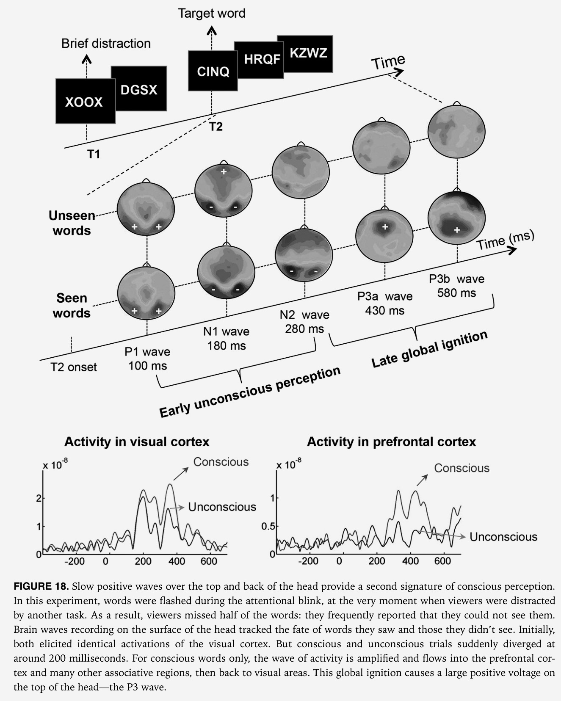
- Sergent Balliet & Dehaene (2005)
- time course of conscious access
- attentional blink
- identical stimuli: different cortical fate
- sometimes consciously perceived
- sometimes totally undetected
- Careful parameter tuning (50% threshold) same words could be made conscious or unconscious
- all-or-none reports:
- perceived the word or entirely missed
- rarely reported a partial perception of the letters
Brain Hierarchy & ERP latency
In less than one-tenth of a second, between 200 and 300 milliseconds after the stimulus appeared, our recordings went from no difference at all to a massive all-or-none effect p.124
Trial-by-trial Analysis
200 to 300 ms after word
- Unconscious: brain activity faded
- Conscious: brain activity to PFC
400 milliseconds
- Conscious: large amplitude - R/L PFC, ACC, & parietal
500 ms after word
- re-activation: V1, V2, V4 - sustained memory? - conscious info?
Brain Hierarchy & ERP latency
conscious avalanche produces a simple marker
easily picked up by electrodes glued to the top of the head.
On conscious trials only,
- an ample voltage wave sweeps through this region.
- starts around 270 ms
- peaks anywhere between 350 - 500 ms
P3/P300 wave: slow and massive event
P3 wave (because it is the third large positive peak after a stimulus appears)
P300 wave (because it often starts around 300 milliseconds).
many observed paradigms
easily recorded
2nd Signature of Consciousness
P3/P300 wave
- Suddenly gain access to a conscious percept
- 1st P3 evoked by initial string of letters
- attention diverted
- always consciously perceived
- 2nd P3 was elicited by the target word when it was seen.
- 1st P3 evoked by initial string of letters
- When 2nd target was perceived, P3 wave was sharply delayed
- Conscious access: push-and-pull system
- Brain preoccupied (P3) by 1st string
- Could not simultaneously process 2nd word
- Consciousness of one precludes consciousness of the other
- “refractory period” (Ch. 1)
- busy-line for consciousness

P3 & Conscious Awareness
- ERP pre/post 270 ms :
- unconscious: small positive wave over posterior parietal cortex
- conscious: activation of bilateral frontal lobes
- on unseen trials :
- avalanche of brain activity started but
- quickly fizzled, didn’t start global P3
- Full-size P3, bilateral PFC :
- indexed neural process
- conscious perception
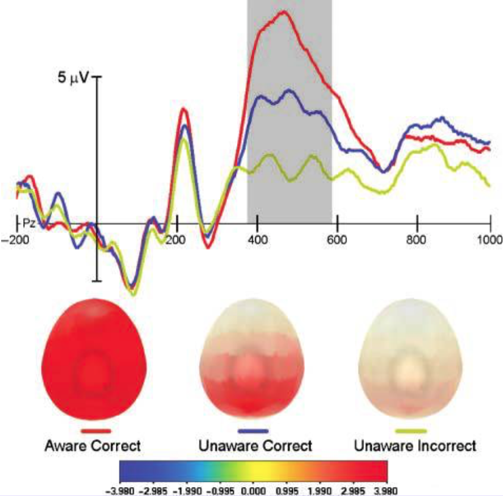
Igniting the Conscious Brain
Global Ignition
Analogy: audience with a few claps -> bursting into applause. (Hebb, 1949)
Network of neurons excite one another fall into a global pattern of synchronized activity.
Dehaene’s research suggests ignition occurs when broadcast excitation exceeds threshold and becomes self-reinforcing.
Water freezing to ice is the phase change from liquid to solid.
Concept of phase transition captures many properties of consciousness
Like freezing, consciousness has threshold
Does a conscious message trigger a brain-scale phase transition, freezing brain areas together into a coherent state?
- To test, experiment varied one single physical parameter of a display, like slowly dropping temperature of water vial
- Examined whether subjective reports, and objective marker of brain activity, behaved discontinuously with sudden burst like a drastic phase transition.
Global Ignition
Whenever we become aware of an unexpected piece of information, the brain suddenly seems to burst into a large-scale activity pattern. My colleagues and I have called this property “global ignition.” Dehaene & Naccache, 2001
- Global ignition
- excitation exceeds a threshold
- becomes self-reinforcing (positive feedback-loop)
- some neurons excite others that return the excitation.
- (Dehaene Sergent Changeux, 2003)
Global Ignition
strongly interconnected neurons
burst into a self-sustained state of high-level activity,
reverberating “cell assembly,” (Hebb)
Terms for collective threshold phenomena:
- phase transition (Physics)
- “bifurcation” (Mathematics)
Examples:
- subliminal/supraliminal
- gas/liquid
- liquid/solid
Antoine Del Cul
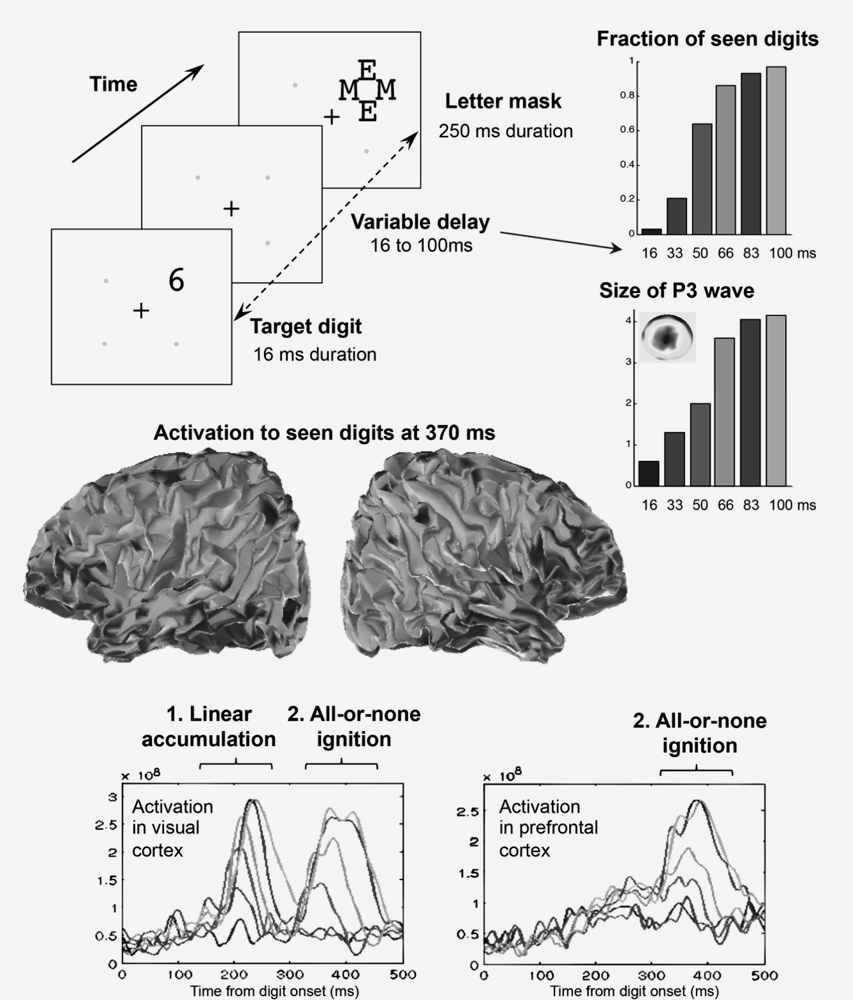
Fig 19 Del Cul, Baillet, & Dehaene, 2007
- Digit (16 ms)
- Blank Frame
- Random Letters Mask
- Flashed random digits for 16ms, then blank screen, then masked with random letters.
- Varied the duration of the blank screen.
- Did perception change continuously?
- No, followed all-or-none pattern.
- Digit seen at long durations, not seen at short.
- As delay increased, visibility did not improve smoothly, with sudden step around 50ms.
- Results again point toward P3 waveform
- At ~270ms after digit onset, exhibition of global ignition pattern
Antoine Del Cul
Fig 19 Del Cul, Baillet, & Dehaene, 2007
- Digit (16 ms)
- Blank Frame
- Random Letters Mask
We varied the duration of the blank in small steps of 16 milliseconds. What did viewers report? Did their perception change continuously?
- Clear threshold
- All-or-none pattern (phase transition)
- P1 & N1 (initial response of the visual cortex)
- Unaffected by the digit-letters delay
- Visual activation: proportional to digit duration
Brain Activity Predicts Response
Unseen trials: strong activity (before 270 ms)
Seen trials: 270 ms after digit onset
- Global Ignition
- Sudden divergence (phase transition)
- Avalanche of activation
- bilateral & symmetrical pattern (despite unilateral presentation)
Brain activation incommensurate to masking delay increments
Conscious access resembled a phase transition in the dynamics of neural networks
Avalanche of processing stages culminates in state where many brain areas fire in synchrony
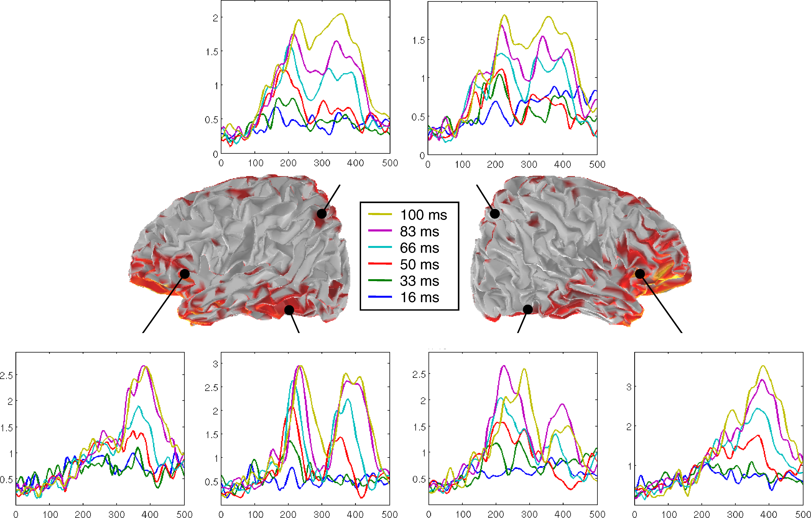
Fig 19 Del Cul, Baillet, & Dehaene, 2007
Deep Inside the Conscious Brain
Intracranial E-phys: Humans
- Unlike non-invasive EEG, new experiments with epilepsy patients place electrodes directly inside brain
- Used experiment to track step-by-step progression of word into cortex along visual pathway
- Results very similar to ERP:
- after 300ms, huge change in activity.
- 70% of interior recording sites showed significant influence of consciously perceived words
- Only 25% for unconsciously perceived words
- Conclusion: unconscious information in narrow brain circuit, consciously perc. Info. Is globally distributed.
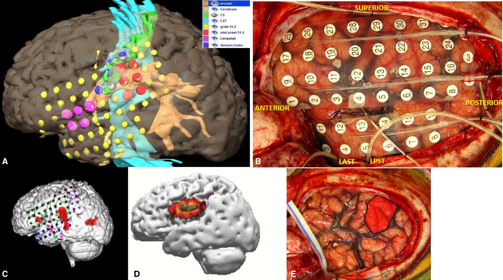
Intracranial E-phys: Humans
- epilepsy patients
- electrodes placed directly inside brain
- direct view of cortical activity
- step-by-step progression of a word into cortex
- electrodes along visual pathway
- stimulus progression through successive stages
- check each stage: seeing vs.not seeing
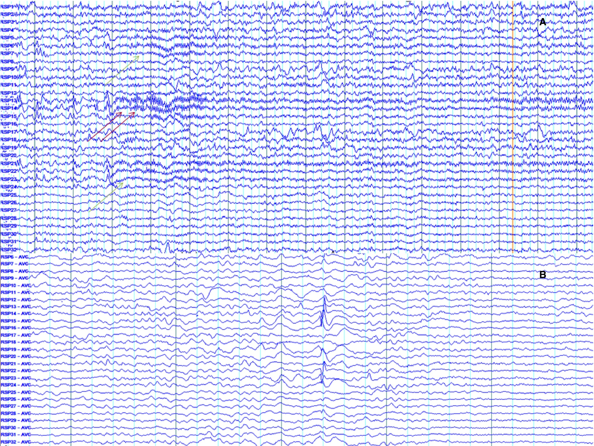
Brain Oscillations
- Brain emits variety of electrical fluctuations of various frequencies
- Stimulus perturbs current waves by reducing or shifting them
- When subject was given a word, saw enhanced gamma activity within first 200ms.
- Gamma died out for unseen words, remained sustained for seen words.
Electrophysiologists distinguish many different rhythms in the EEG signal. The awake brain emits a variety of electrical fluctuations that are coarsely defined by their frequency bands, conventionally labeled with Greek letters. The bestiary of brain oscillations includes the alpha band (8 to 13 hertz), the beta band (13 to 30 hertz), and the gamma band (30 hertz and higher).
Fisch, L., Privman, E., Ramot, M., Harel, M., Nir, Y., Kipervasser, S., … & Malach, R. (2009). Neural “ignition”: enhanced activation linked to perceptual awareness in human ventral stream visual cortex. Neuron, 64(4), 562-574.
3rd Signature of Consciousness
Late Gamma Amplification
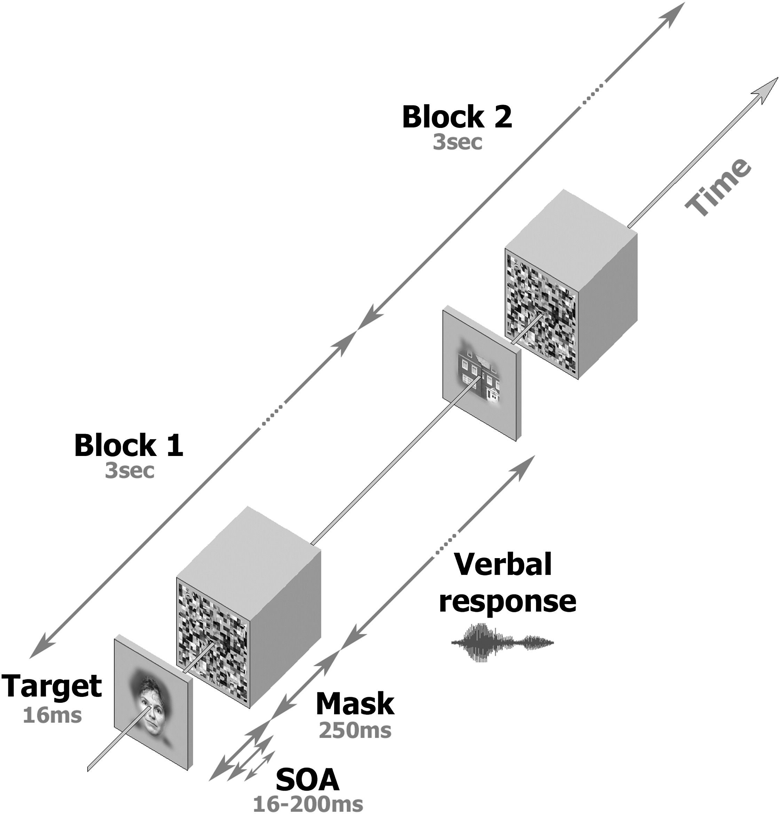
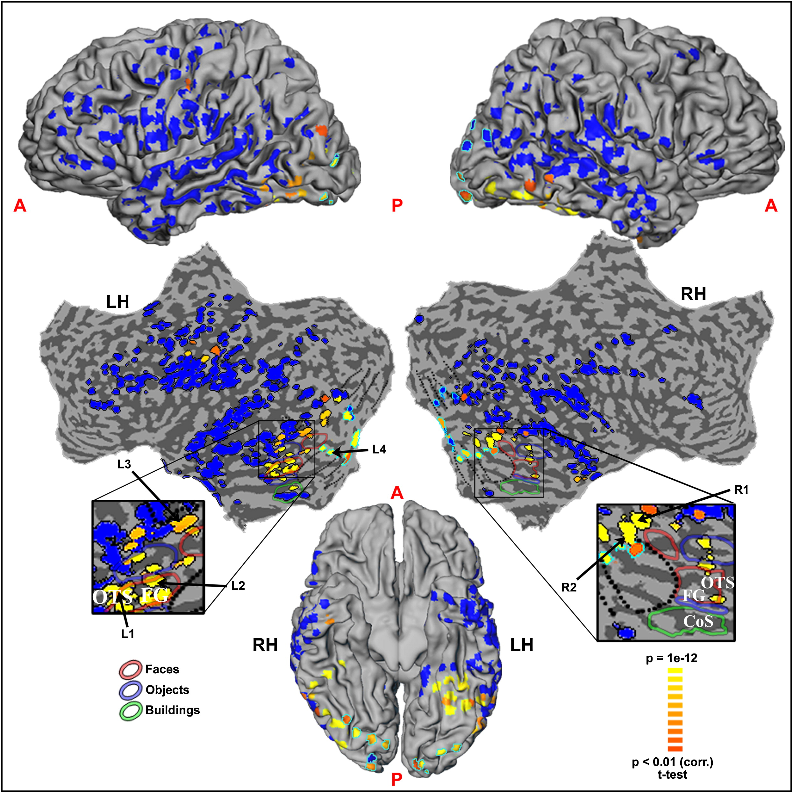
3rd Signature of Consciousness
Late Gamma Amplification
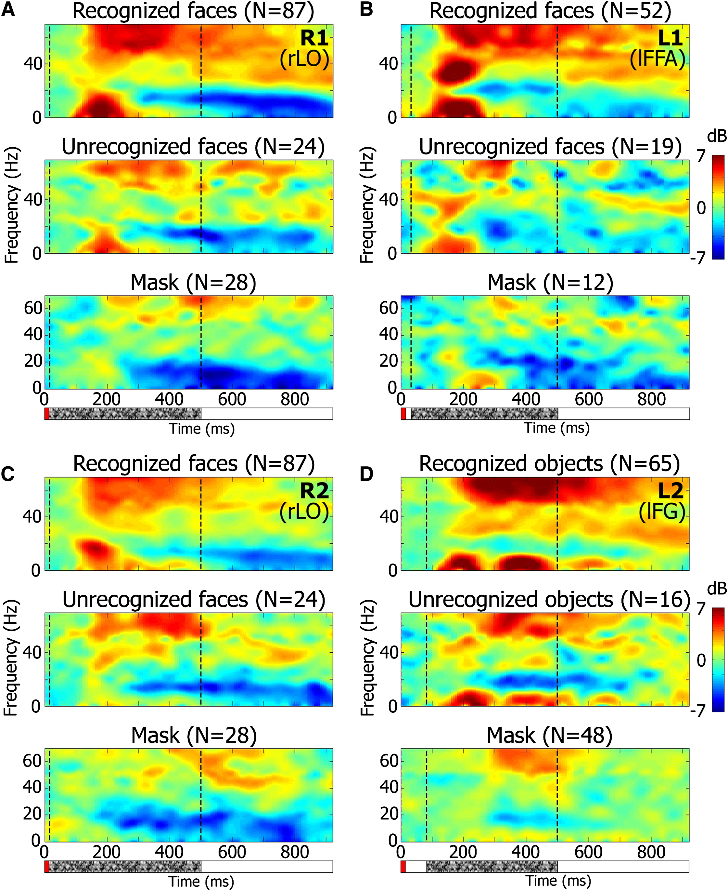
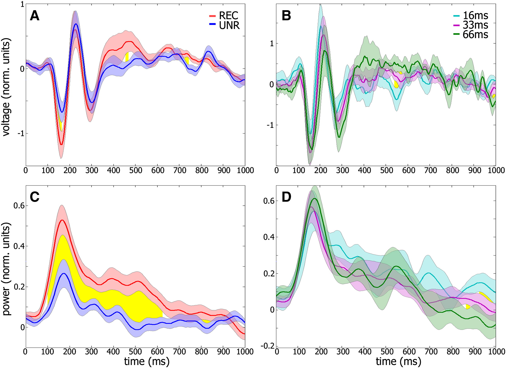
Seen Vs Unseen trials
After 300 milliseconds the difference became massive
Unseen trials
- Activity died out
- No frontal activation
Seen trials
- Massively amplified activity
- All-or-none ignition
The Brain Web
Christiaan Huygens: “Odd Sympathy”
Horologium Oscillatorium (1673)
The Longitude Act (1714) – £10,000 to £20,000
- A scale of rewards for anyone who ‘shall discover a more certain and
practical method of ascertaining the longitude’ over a voyage from England to
the West Indies, about 6 weeks.
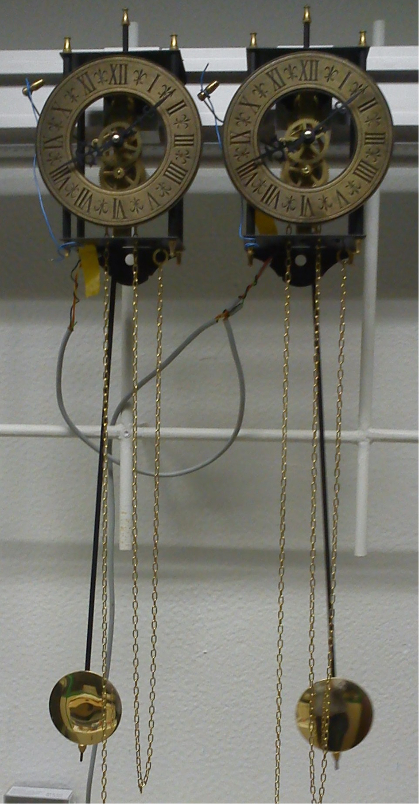

Christiaan Huygens: “Odd Sympathy”
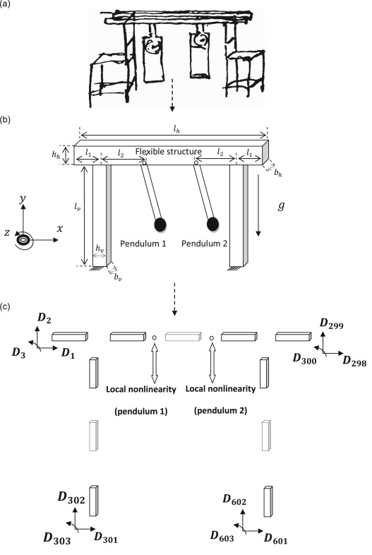
Experimental results for an experiment lasting one hour.
- Angular displacement of pendulum one.
- Angular displacement of pendulum one.
- Angular displacement of pendulum two.
- The clocks are initialized
close to anti-phase motion.
- The clocks are initialized
- Pendulum one gains amplitude,
whereas pendulum two loses
amplitude and the phase difference decreases.
- Pendulum one gains amplitude,
- After a long transient behaviour, the pendula synchronize in-phase.
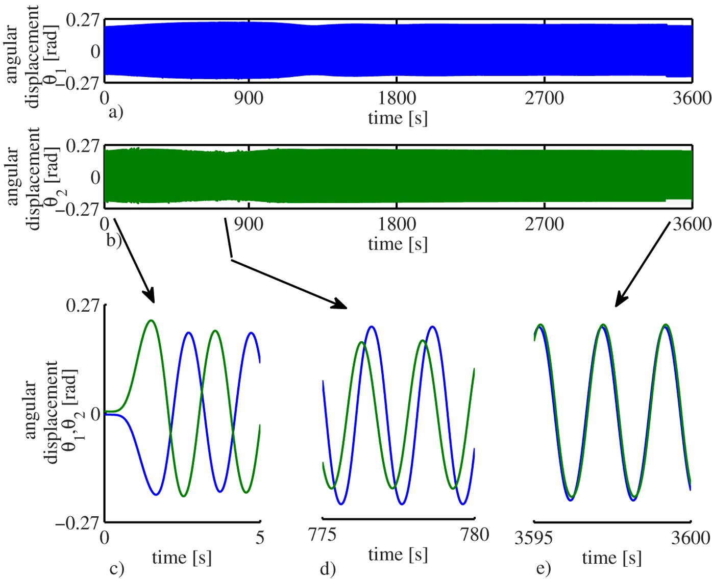
Resonance and Synchrony
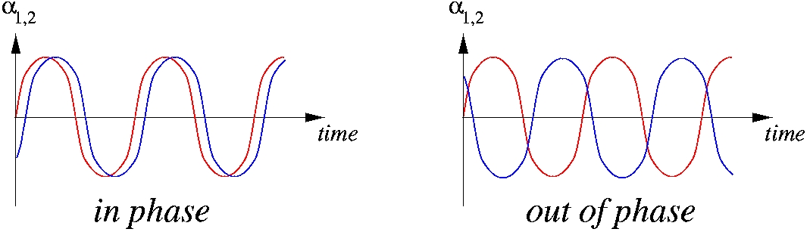Windows of Opportunity
In essence, synchrony opens up a channel of communication between distant neurons.
If they shout in unison, however, their voice is much more likely to be heard and relayed.
Neurons that oscillate together share windows of opportunity during which they are all ready to receive signals from one another. The synchrony that we researchers observe in our macroscopic recordings may indicate that, at the microscopic scale, thousands of neurons are exchanging information.
What may be particularly significant for conscious experience are instances when such exchanges occur not only between two local regions but across many distant regions of the cortex, thus forming a coherent brain-scale assembly.
4th Signature of Consciousness
The Brain Web
- Synchrony facilitates transmission of information.
- Massive synchronization of electromagnetic signals across cortex
- Late time window (+300ms)
- “Brain web” exchange of long distance signals.
- Distant electrodes synchronize
- but only if the image is consciously perceived
Rhythm Nesting
Conscious perception, by contrast, involves long-distance communication and a massive exchange of reciprocal signals that has been termed a “brain web.”
The frequency at which this brain web is established varies across studies, but it typically occurs in the lower frequencies of the beta band (13–30 hertz) or the theta band (3–8 hertz)
Presumably these slow carrier frequencies are the most convenient for bridging over the significant delays that are involved in transmitting information across distances of several centimeters.
frequencies tend to be “nested” inside one another: high-frequency bursts fall at predictable moments relative to lower-frequency fluctuations.
We need new mathematical instruments in order to understand these complicated patterns.
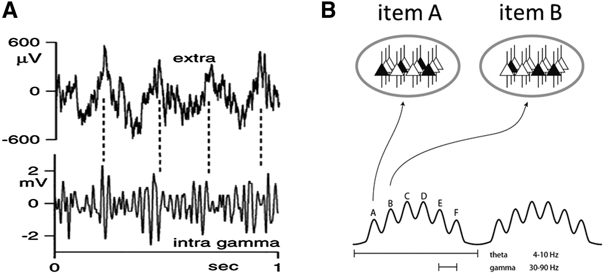
–
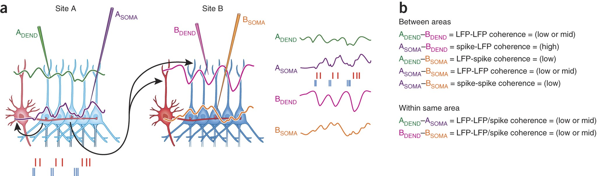

Leading Indicator
Merriam-Webster Dictionary:
“an economic indicator (such as the level of corporate profits or of stock prices) that more often than not shows a change in direction before a corresponding change in the state of the economy”
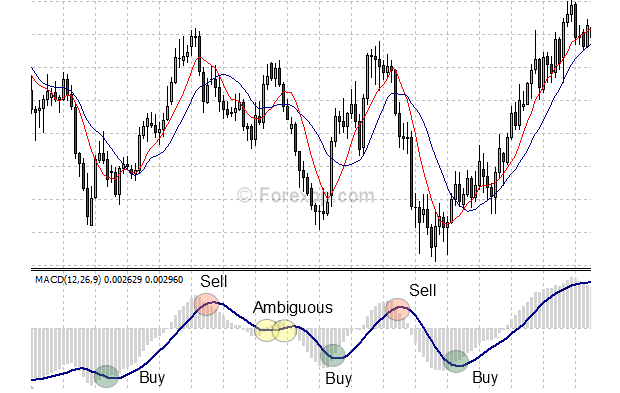
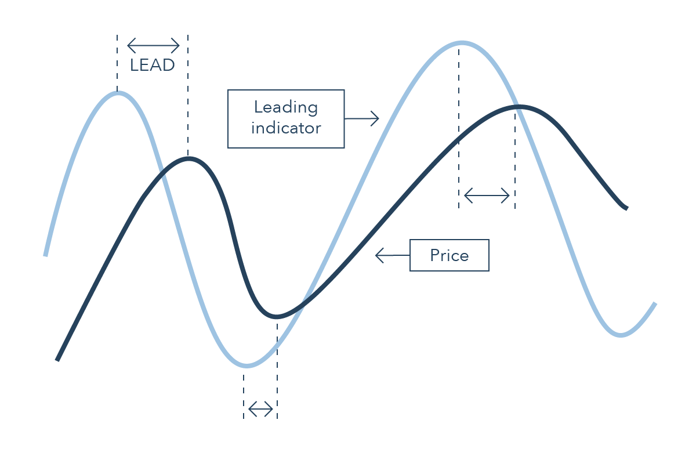
Cambridge Dictionary:
“something that shows what a situation will be like in the future rather than showing what it is like now or has been like in previous weeks, months, etc. : Claims for unemployment insurance, a leading indicator for the economy, rose in July.”
Statistical “Causality”
Back in 1969 the British economist Clive Granger invented this method to determine when two time series—for instance, two economic indicators—are related in such a manner that one may be said to “cause” the other.
Leading Indicators
Given two temporal signals, the method asks whether one signal precedes the other and predicts its future values.
signal A is said to “cause” signal B if the past states of A predict the present state of signal B better than the past states of signal B alone does.
nothing, in this definition, precludes a causal relation in both directions: A may influence B at the same time as B influences A.
Statistical “Causality”?
The brain is so tightly interconnected that causality is an essential but challenging issue to determine.
Does activation progress in a bottom-up fashion, from sensory receptors to higher-order integrative centers in the cortex?
Or is there also a significant top-down component, in which the higher regions send descending prediction signals that shape what we consciously perceive?
Anatomically, bottom-up and top-down pathways are both present throughout the cortex.
Most long-distance connections are bidirectional, and the descending top-down projections often vastly outnumber the ascending ones.
Causal Explosion
Specifically during the consciously perceived trials, we observed a massive increase in bidirectional causality throughout the brain.
Once again this “causal explosion” emerged all of a sudden around 300 milliseconds.
The forward-moving wave is consistent with an obvious intuition: sensory information must climb up the hierarchy of cortical areas, from primary visual cortex to increasingly abstract representations of the stimulus.
The most encompassing description is that the brain falls into a “distributed attractor”—a large-scale pattern of ignited brain regions that, for a short while, produces a sustained state of reverberating activity.
Sub… Liminal
on unconscious trials; the brain web never ignited. There was only a transient period of causal interrelations in the ventral visual cortex, but it did not last much beyond 300
Quite interestingly, this period was dominated by descending top-down causal signals. It looked as if the anterior regions were desperately interrogating sensory areas. Their failure to respond with a consistent signal resulted in the absence of conscious perception.
The Tipping Point & Its Precursors
The Tipping Point & The Avalanche
- Avalanche metaphor: After the ignition threshold is reached, which takes about (300 ms), top down signals are sent from the frontal regions to various distributed areas in addition to the bottom-up sensory signals being sent from lower regions.
Before The Avalanche
- Some experiments detect correlate of conscious perception before the stimulus is presented
- could be random variation among trials based on unexplainable differences in neural activity
- Unpredictable neural fluctuations
- Support or fight against avalanche
- Preconditions: Random neural fluctuations
- produce pre-existing biases to support or discourage consciousness
- We must distinguish between the correlates of consciousness and the signatures of consciousness